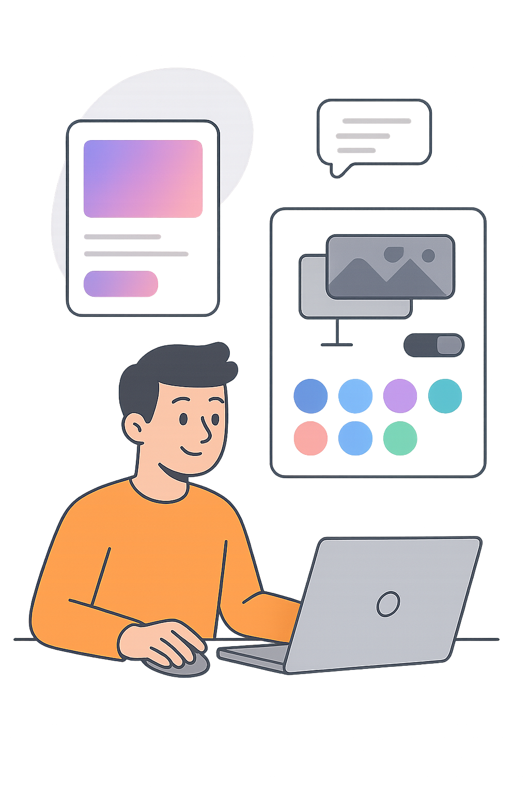

● HTML + Tailwind (CDN)
Красивий сайт з кастомізацією та анімаціями
Це легка статична версія. Для повного проекту дивись папку frontend.
Preview

Блоки
Кастомізація
Слайдер hue змінює акцент через CSS змінну.
Анімації
Легкі CSS переходи та fade-in.
Готовий стиль
Градієнти + glass + тіні.